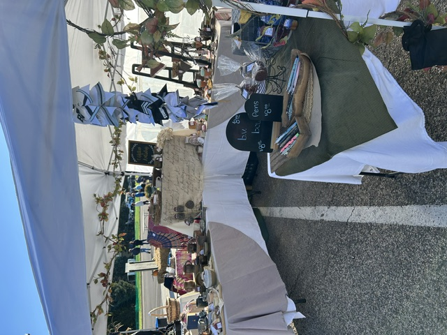
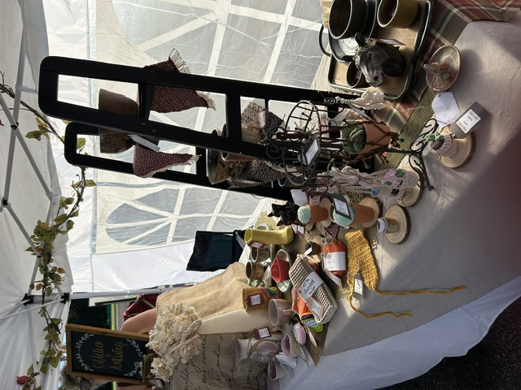
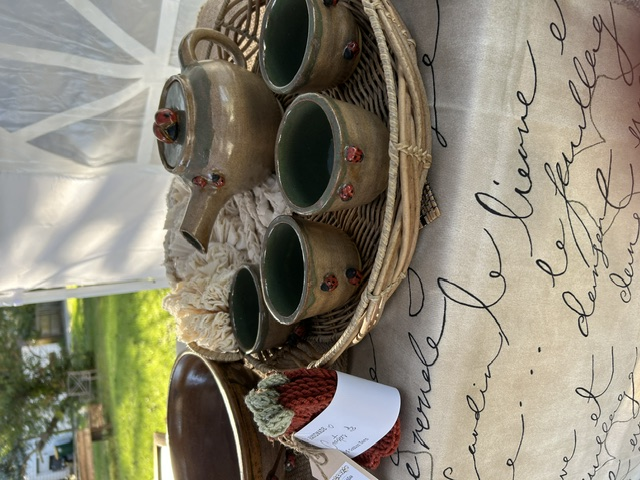

<script type="application/ld+json">
{
  "@context": "https://schema.org",
  "@graph": [
    {
      "@type": "Organization",
      "@id": "https://www.edgeofliberty.us/oddities-and-artistry/#org",
      "name": "Oddities and Artistry",
      "url": "https://www.edgeofliberty.us/oddities-and-artistry/",
      "description": "Eclectic handmade crafts, original artwork & unexpected treasures",
      "image": "https://www.edgeofliberty.us/oddities-and-artistry/image0.jpeg",
      "areaServed": {
        "@type": "City",
        "name": "Valparaiso, Indiana"
      }
    },
    {
      "@type": "BreadcrumbList",
      "itemListElement": [
        {
          "@type": "ListItem",
          "position": 1,
          "name": "Home",
          "item": "https://www.edgeofliberty.us/"
        },
        {
          "@type": "ListItem",
          "position": 2,
          "name": "Oddities and Artistry",
          "item": "https://www.edgeofliberty.us/oddities-and-artistry/"
        }
      ]
    }
  ]
}
</script>
<section class="vendor-page">
<h1>Oddities and Artistry</h1>
<div class="vendor-content">
<p class="vendor-lead">Eclectic handmade crafts, original artwork &amp; unexpected treasures — find Oddities and Artistry at The Edge of Liberty Craft Fair in Valparaiso, IN (Northwest Indiana).</p>
<p>Oddities and Artistry is a family creative adventure featuring an eclectic collection of handmade crafts, original artwork, and unusual finds. What started as a fun project for a local fall festival turned into an opportunity to share their creations with more people. Expect a little bit of everything, from artistic pieces to quirky handmade treasures, all brought together by a family that enjoys creating and having fun.</p><p class="vendor-inperson-only">This vendor currently sells in person at our craft fairs only.</p>
<div class="vendor-dates">
<h3>Find us at these craft fair dates</h3>
<div class="vendor-year-columns">
<section class="vendor-year"><h4>2027 Craft Fairs</h4>
<p>No dates listed.</p>
</section>
<section class="vendor-year"><h4>2026 Craft Fairs</h4>
<ul>
<li><a href="/october-18-2026/">October 18, 2026</a></li>
</ul>
</section>
</div>
</div>
<h3>Gallery</h3>
<div class="vendor-photos constrained-gallery">
<div class="vendor-masonry">



</div>
</div>
</div>
</section>
